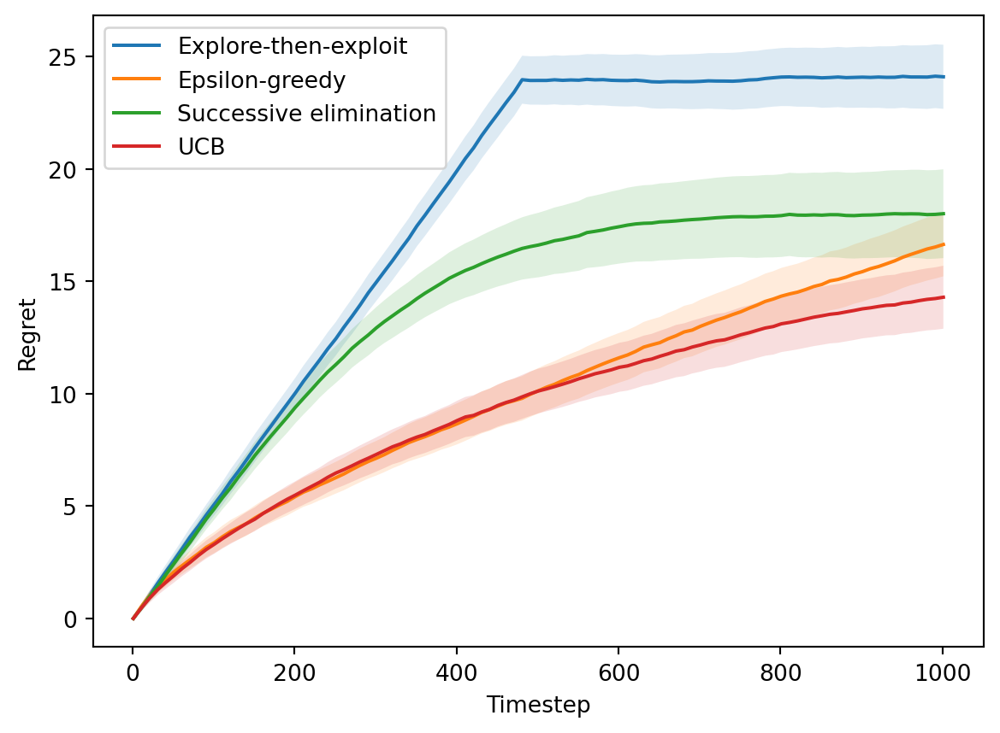

Here’s the definition; taken from Wikipedia, which in order takes it from Fristedt and Gray (1996, 11).
Definition 1 (Random variable). Let \((\Omega, \mathcal{F}, P)\) be a probability space and \((E, \mathcal{E})\) a measurable space. Then an \((E, \mathcal{E})\)-valued random variable is a measurable function \(X : \Omega \to E\), which measures that, for every subset \(B \in \mathcal{E}\), its preimage is \(\mathcal{F}\)-measurable; \(X^{-1}(B) \in \mathcal{F}\), where \(X^{-1}(B) = \{\omega : X(\omega) \in B\}\).
\begin{algorithm} \caption{Explore-then-exploit} \begin{algorithmic} \Require{$K$ and $T$ (both known), unknown reward distributions $\mathcal{D}_a$.} \For{$t = 1, 2, \ldots$} \State Explore phase: try each arm $N$ times. \State Exploit phase: determine $\tilde{a}$ with the highest average reward; then play $\tilde{a}$ in all remaining rounds. \EndFor \end{algorithmic} \end{algorithm}
\(N = 2 \sqrt[3]{T^2 \log T / K^2}\)
Code for Explore-then-exploit
from math import logfrom numpy import argmaxclass ExploreExploit:def__init__(self, K, T):self.K = Kself.N =round(2* (T**2* log(T) / K**2)**(1/3))self.totals = [0] * Kdef__str__(self):return"Explore-then-exploit"def play(self, t):'''Choose an arm to play.'''if t <=self.K*self.N:# Play each arm N timesreturn t %self.Kelse:# Play best armreturnself.bestdef feedback(self, t, a, r):'''Receive a reward.'''if t <=self.K*self.N:# Record rewardself.totals[a] += rif t ==self.K*self.N:# Compute best armself.best = argmax(self.totals)
\begin{algorithm} \caption{Epsilon-greedy} \begin{algorithmic} \Require{$K$ and $T$ (both known), unknown reward distributions $\mathcal{D}_a$.} \For{$t = 1, 2, \ldots$} \State Toss a coin with success rate $\epsilon_t$. \If{success} \State Explore: choose an arm uniformly at random. \Else \State Exploit: choose an arm with the highest average reward so far. \EndIf \EndFor \end{algorithmic} \end{algorithm}
Code for Epsilon-greedy
from math import logfrom random import random, randrangefrom numpy import argmax, divide, errstate, inf, nanclass EpsilonGreedy:def__init__(self, K, _):self.K = Kself.totals = [0] * Kself.counts = [0] * Kdef__str__(self):return"Epsilon-greedy"def _eps(self, t):return (self.K*log(t)/t)**(1/3)def _best(self):with errstate(divide='ignore', invalid='ignore'): avg = divide(self.totals, self.counts) avg[avg == inf] =-inf avg[avg == nan] =-infreturn argmax(avg)def play(self, t):'''Choose an arm to play.'''if random() <self._eps(t):# Play random armreturn randrange(self.K)else:# Play best armreturnself._best()def feedback(self, t, a, r):'''Receive a reward.'''self.totals[a] += rself.counts[a] +=1
\begin{algorithm} \caption{Successive Elimination} \begin{algorithmic} \Require{$K$ and $T$ (both known), unknown reward distributions $\mathcal{D}_a$.} \State Initialize active arm set $\mathcal{A}_1 = [K]$. \For{$p = 1, 2, \ldots$} \State Play each arm in $\mathcal{A}_p$ once. \State Let $t$ be the time at the end of the current phase $p$. \State $\mathcal{A}_{p+1} = \{ a \in \mathcal{A}_p : \mathrm{UCB}_t (a) \geq \max_{a' \in \mathcal{A}_p} \mathrm{LCB}_t (a) \}$ \EndFor \end{algorithmic} \end{algorithm}
Code for Successive elimination
from random import random, randrangefrom numpy import argmax, divide, errstate, inf, nan, log, sqrtimport numpy as npclass SuccessiveElimination:def__init__(self, K, T, delta=1500):self.num = log(2* K * T / delta) /2assertself.num >0, "delta too large"self.totals = [0] * Kself.counts = [0] * Kself.A =list(range(K))self.idx =0def__str__(self):return"Successive elimination"def _mu(self):with errstate(divide='ignore', invalid='ignore'): mu = divide(self.totals, self.counts) mu[mu == inf] =0 mu[mu == nan] =0return mudef _beta(self):with errstate(divide='ignore'): beta = sqrt(divide(self.num, self.counts))return betadef play(self, t):'''Choose an arm to play.'''ifself.idx ==len(self.A):# Update arm set A u, b =self._mu(), self._beta() lcb, ucb = u-b, u+bself.A = [a for a inself.A if ucb[a] >= np.max(lcb)]self.idx =0# Play each arm in A a =self.A[self.idx]self.idx +=1return adef feedback(self, t, a, r):'''Receive a reward.'''self.totals[a] += rself.counts[a] +=1
from random import randomfrom numpy.random import normalfrom numpy import zeros, sqrt# Simulation parametersT =1000# Number of roundsF =10# Logging frequencyN =100# Number of trials# Arms to exploremeans = [0.5, 0.6]best =max(means)arms = [random, lambda: normal(means[1], 0.2, 1).item()]K =len(arms)# Algorithms to usecs = [ExploreExploit, EpsilonGreedy, SuccessiveElimination, UCB]A =len(cs)# Evaluate algorithmsx = zeros((T//F+1, A))s = zeros((T//F+1, A))for n inrange(1, N+1):for i, c inenumerate(cs): alg = c(K, T) rgt =0for t inrange(1, T+1): a = alg.play(t) r = arms[a]() alg.feedback(t, a, r) rgt += best - rif t % F ==0:# Welford's online algorithm xn1 = x[t//F, i] x[t//F, i] = ((n-1)*xn1 + rgt) / n s[t//F, i] += (rgt - xn1) * (rgt - x[t//F, i])s =0.2*sqrt(s / (N-1))
Code for plotting regret
import numpy as npimport matplotlib.pyplot as pltt = np.arange(1, T+2, F)plt.plot(t, x)for i inrange(A): plt.fill_between(t, x[:,i]-s[:,i], x[:,i]+s[:,i], alpha=.15)plt.xlabel("Timestep")plt.ylabel("Regret")plt.legend([c(K, T) for c in cs]);

Figure 1: Performance of MAB algorithms
References
Fristedt, Bert E., and Lawrence F. Gray. 1996. A ModernApproach to ProbabilityTheory. Springer Science & Business Media.
Ji, Bo. 2022. “Online Learning and SequentialDecisionMaking.” CS6104 Advanced Topics in Theory of Computation.
---title: Probability theory and random variablessubtitle: Concentration bounds and multi-armed banditsdescription: TODOdate: 2023/12/01categories: - TODObibliography: blog.bibfilters: - pseudocode---<!-- Describe the probability theory and random variables. -->## Random variablesHere's the definition; taken from [Wikipedia](https://en.wikipedia.org/wiki/Random_variable#Measure-theoretic_definition), which in order takes it from @fristedt_modern_1996 [page 11].:::{.definition}**Definition 1 (Random variable).**Let $(\Omega, \mathcal{F}, P)$ be a [probability space](https://en.wikipedia.org/wiki/Probability_space) and $(E, \mathcal{E})$ a [measurable space](https://en.wikipedia.org/wiki/Measurable_space).Then an $(E, \mathcal{E})$**-valued random variable** is a measurable function $X : \Omega \to E$, which measures that, for every subset $B \in \mathcal{E}$, its [preimage](https://en.wikipedia.org/wiki/Preimage) is $\mathcal{F}$-measurable; $X^{-1}(B) \in \mathcal{F}$, where $X^{-1}(B) = \{\omega : X(\omega) \in B\}$.:::### Random vectors### Example## Concentration bounds### Hoeffding's inequality### Example## Multi-armed banditsBased on @slivkins_introduction_2022```pseudocode#| label: alg-explore-exploit#| html-indent-size: "1.8em"#| html-comment-delimiter: "//"#| html-line-number: true#| html-no-end: false#| pdf-placement: "htb!"#| pdf-line-&number: true\begin{algorithm}\caption{Stochastic MAB (Framework)}\begin{algorithmic}\Require{$K$ and $T$ (both known), unknown reward distributions $\mathcal{D}_a$.}\For{$t = 1, 2, \ldots$} \State Choose an action $a_t \in [K]$. \State Suffer loss $z_t[a_t]$ and also only observe $z_t[a_t]$.\EndFor\end{algorithmic}\end{algorithm}```Here, $z_t$ is a **random vector** sampled from the unknown distributions, i.e., $z_t[a] \sim \mathcal{D}_a$.### Explore-then-exploit@ji_online_2022 [Lecture 14]```pseudocode#| label: alg-explore-exploit#| html-indent-size: "1.8em"#| html-comment-delimiter: "//"#| html-line-number: true#| html-no-end: false#| pdf-placement: "htb!"#| pdf-line-&number: true\begin{algorithm}\caption{Explore-then-exploit}\begin{algorithmic}\Require{$K$ and $T$ (both known), unknown reward distributions $\mathcal{D}_a$.}\For{$t = 1, 2, \ldots$} \State Explore phase: try each arm $N$ times. \State Exploit phase: determine $\tilde{a}$ with the highest average reward; then play $\tilde{a}$ in all remaining rounds.\EndFor\end{algorithmic}\end{algorithm}```$N = 2 \sqrt[3]{T^2 \log T / K^2}$```{python}#| code-summary: Code for Explore-then-exploitfrom math import logfrom numpy import argmaxclass ExploreExploit:def__init__(self, K, T):self.K = Kself.N =round(2* (T**2* log(T) / K**2)**(1/3))self.totals = [0] * Kdef__str__(self):return"Explore-then-exploit"def play(self, t):'''Choose an arm to play.'''if t <=self.K*self.N:# Play each arm N timesreturn t %self.Kelse:# Play best armreturnself.bestdef feedback(self, t, a, r):'''Receive a reward.'''if t <=self.K*self.N:# Record rewardself.totals[a] += rif t ==self.K*self.N:# Compute best armself.best = argmax(self.totals)```### Epsilon-greedy@ji_online_2022 [Lecture 14]```pseudocode#| label: alg-epsilon-greedy#| html-indent-size: "1.8em"#| html-comment-delimiter: "//"#| html-line-number: true#| html-no-end: false#| pdf-placement: "htb!"#| pdf-line-&number: true\begin{algorithm}\caption{Epsilon-greedy}\begin{algorithmic}\Require{$K$ and $T$ (both known), unknown reward distributions $\mathcal{D}_a$.}\For{$t = 1, 2, \ldots$} \State Toss a coin with success rate $\epsilon_t$. \If{success} \State Explore: choose an arm uniformly at random. \Else \State Exploit: choose an arm with the highest average reward so far. \EndIf\EndFor\end{algorithmic}\end{algorithm}``````{python}#| code-summary: Code for Epsilon-greedyfrom math import logfrom random import random, randrangefrom numpy import argmax, divide, errstate, inf, nanclass EpsilonGreedy:def__init__(self, K, _):self.K = Kself.totals = [0] * Kself.counts = [0] * Kdef__str__(self):return"Epsilon-greedy"def _eps(self, t):return (self.K*log(t)/t)**(1/3)def _best(self):with errstate(divide='ignore', invalid='ignore'): avg = divide(self.totals, self.counts) avg[avg == inf] =-inf avg[avg == nan] =-infreturn argmax(avg)def play(self, t):'''Choose an arm to play.'''if random() <self._eps(t):# Play random armreturn randrange(self.K)else:# Play best armreturnself._best()def feedback(self, t, a, r):'''Receive a reward.'''self.totals[a] += rself.counts[a] +=1```### Successive elimination@ji_online_2022 [Lecture 14]```pseudocode#| label: alg-elimination#| html-indent-size: "1.8em"#| html-comment-delimiter: "//"#| html-line-number: true#| html-no-end: false#| pdf-placement: "htb!"#| pdf-line-&number: true\begin{algorithm}\caption{Successive Elimination}\begin{algorithmic}\Require{$K$ and $T$ (both known), unknown reward distributions $\mathcal{D}_a$.}\State Initialize active arm set $\mathcal{A}_1 = [K]$.\For{$p = 1, 2, \ldots$} \State Play each arm in $\mathcal{A}_p$ once. \State Let $t$ be the time at the end of the current phase $p$. \State $\mathcal{A}_{p+1} = \{ a \in \mathcal{A}_p : \mathrm{UCB}_t (a) \geq \max_{a' \in \mathcal{A}_p} \mathrm{LCB}_t (a) \}$\EndFor\end{algorithmic}\end{algorithm}``````{python}#| code-summary: Code for Successive eliminationfrom random import random, randrangefrom numpy import argmax, divide, errstate, inf, nan, log, sqrtimport numpy as npclass SuccessiveElimination:def__init__(self, K, T, delta=1500):self.num = log(2* K * T / delta) /2assertself.num >0, "delta too large"self.totals = [0] * Kself.counts = [0] * Kself.A =list(range(K))self.idx =0def__str__(self):return"Successive elimination"def _mu(self):with errstate(divide='ignore', invalid='ignore'): mu = divide(self.totals, self.counts) mu[mu == inf] =0 mu[mu == nan] =0return mudef _beta(self):with errstate(divide='ignore'): beta = sqrt(divide(self.num, self.counts))return betadef play(self, t):'''Choose an arm to play.'''ifself.idx ==len(self.A):# Update arm set A u, b =self._mu(), self._beta() lcb, ucb = u-b, u+bself.A = [a for a inself.A if ucb[a] >= np.max(lcb)]self.idx =0# Play each arm in A a =self.A[self.idx]self.idx +=1return adef feedback(self, t, a, r):'''Receive a reward.'''self.totals[a] += rself.counts[a] +=1```### UCB@ji_online_2022 [Lecture 15]```pseudocode#| label: alg-ucb#| html-indent-size: "1.8em"#| html-comment-delimiter: "//"#| html-line-number: true#| html-no-end: false#| pdf-placement: "htb!"#| pdf-line-&number: true\begin{algorithm}\caption{UCB}\begin{algorithmic}\Require{$K$ and $T$ (both known), unknown reward distributions $\mathcal{D}_a$.}\For{$t = 1, 2, \ldots$} \State $a_t = \arg\max_{a \in [K]} \mathrm{UCB}_t (a)$\EndFor\end{algorithmic}\end{algorithm}``````{python}#| code-summary: Code for UCBfrom random import random, randrangefrom numpy import argmax, divide, errstate, inf, nan, log, sqrtimport numpy as npclass UCB:def__init__(self, K, T, delta=1):self.num = log(2* K * T / delta) /2assertself.num >0, "delta too large"self.totals = [0] * Kself.counts = [0] * Kdef__str__(self):return"UCB"def _mu(self):with errstate(divide='ignore', invalid='ignore'): mu = divide(self.totals, self.counts) mu[mu == inf] =0 mu[mu == nan] =0return mudef _beta(self):with errstate(divide='ignore'): beta = sqrt(divide(self.num, self.counts))return betadef play(self, t):'''Choose an arm to play.''' ucb =self._mu() +self._beta()return argmax(ucb)def feedback(self, t, a, r):'''Receive a reward.'''self.totals[a] += rself.counts[a] +=1```### Simulation#### Technical note```{python}#| code-fold: true#| code-summary: Seed random number generatorsfrom random import seed as py_seedfrom numpy.random import seed as np_seedpy_seed(5805)np_seed(5805)```[Welford's online algorithm](https://en.wikipedia.org/wiki/Algorithms_for_calculating_variance#Welford's_online_algorithm)```{python}#| code-summary: Simulation codefrom random import randomfrom numpy.random import normalfrom numpy import zeros, sqrt# Simulation parametersT =1000# Number of roundsF =10# Logging frequencyN =100# Number of trials# Arms to exploremeans = [0.5, 0.6]best =max(means)arms = [random, lambda: normal(means[1], 0.2, 1).item()]K =len(arms)# Algorithms to usecs = [ExploreExploit, EpsilonGreedy, SuccessiveElimination, UCB]A =len(cs)# Evaluate algorithmsx = zeros((T//F+1, A))s = zeros((T//F+1, A))for n inrange(1, N+1):for i, c inenumerate(cs): alg = c(K, T) rgt =0for t inrange(1, T+1): a = alg.play(t) r = arms[a]() alg.feedback(t, a, r) rgt += best - rif t % F ==0:# Welford's online algorithm xn1 = x[t//F, i] x[t//F, i] = ((n-1)*xn1 + rgt) / n s[t//F, i] += (rgt - xn1) * (rgt - x[t//F, i])s =0.2*sqrt(s / (N-1))``````{python}#| code-fold: true#| code-summary: "Code for plotting regret"#| label: fig-line#| fig-cap: "Performance of MAB algorithms"import numpy as npimport matplotlib.pyplot as pltt = np.arange(1, T+2, F)plt.plot(t, x)for i inrange(A): plt.fill_between(t, x[:,i]-s[:,i], x[:,i]+s[:,i], alpha=.15)plt.xlabel("Timestep")plt.ylabel("Regret")plt.legend([c(K, T) for c in cs]);```